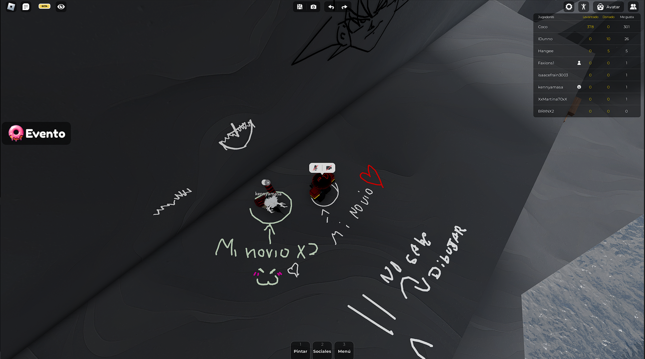
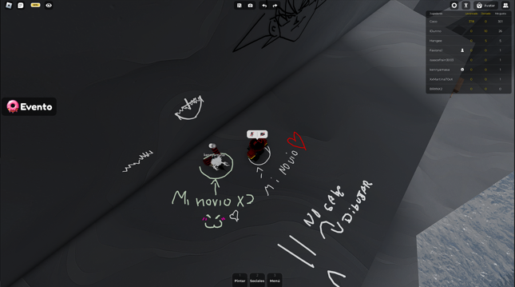

Para mi querido y eterno Amor.
Hola, si estas leyendo esto, puedo suponer que sos Alexander, el mismo Alexander que alguna vez fue mi pareja ( Ah no ser que hayan hackeado las respuestas D: ). Entiendo que parezco totalmente un loco habiendo hecho semejante pagina solo para vos, pero de verdad, necesitaba desahogarme de alguna manera, escribiendote a vos sin escribirte directamente. Por lo que hice esta pagina en forma de suerte y verdad, teniendo la esperanza de que tal vez la vieras, y pudieras ver lo que contiene, y lo que quiero decirte.
Alex, desde el primer momento en el que dije que eras el amor de mi vida, no estaba mintiendo, siempre lo fuiste y siempre lo vas a ser. Fuiste mi primera pareja, y para lo que mi fue, mi alma gemela. Capaz que yo no fui tu alma gemela, tal vez fue la razon por la que dejaste de amarme, capaz que encontraste a alguien que te hizo sentir cosas distintas o superiores a las que yo como tu novio te hice sentir, y lo entiendo, como persona no estas obligado a estar con alguien si no lo amas. Pero vos me conoces bastante bien, sabes como soy, sabes que soy una persona muy sentimental y apegada a vos. Y cuando empezaste a alejarte de mi, me desespere a no mas poder. La razon por la que te termine no fue ni mas ni menos que por dolor, me di cuenta, de como ya no era igual, y decidi terminarte a pesar de mi amor todavia presente por vos. En este tiempo en el que no hemos estado juntos, he llorado decenas de veces, pensando que hice mal, debido a que yo tampoco tenia claro el porque dejaste de amarme, ya que no me diste una respuesta clara, empece a sentirme horrible, pasando todos los dias mal. Llego un punto en el que estaba tan vacio, que decidi crearme una cuenta en Threads, no para buscar pareja, si no para buscar alguna amistad que me ayudara a lidiar el luto de terminar la relacion contigo. Y si, me amigue con alguien muy buena onda, pero luego de hablar un tiempo, me di cuenta, que no es igual. Me di cuenta que no hay dos Alexander Aravena en el mundo, que no existe alguien que tenga tu misma cara que tanto ame ver sonreir, esa linda y tierna voz que tanto ame escuchar, esa lindo nombre que ame decir, y como final, esa linda manera de ser como persona, tan amable y tierna (aunque aveces muy enojona jsj). Con eso me di cuenta, que no puedo remplazarte, y tampoco quiero, porque nunca va a haber alguien como vos, que me haya hecho sentir cosas tan lindas y maravillosas como vos hiciste, Alex. Mientras escribo esta carta a las 19:51, sigo sin entender que paso. Mientras revisaba chats antiguos tuyos, pude ver que hace tan solo 2 meses, eramos una linda pareja, hasta llore mientras estaba en el bus viendo mensajes tuyos diciendome "Te amo :3". No se que cambio, no se que hice mal, y me rompe el alma no saberlo (estoy llorando mientras escribo esta parte).
Alexander, fuiste una experiencia maravillosa, y como dijo Joel Miller: "Si de alguna manera dios me diera otra oportunidad... lo haria todo de nuevo". Juro que nunca en la vida te voy a olvidar, mi querido amor, gracias por todo, te amo demasiado, de una forma indescriptible, por siempre y para siempre vas a ser mi alma gemela, aunque para vos yo no lo sea.
Te amo mi amorchito precioso ♥
A continuacion, algunos recuerdos que seleccione personalmente de nosotros que representan la relacion (Podes verlas apretandolas y elijiendo abrir imagen en otra pestaña)


 
